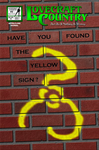

|
Art Imitates Life, in All Truthinessby Shannon Appelcline Skotos is a small company. We had a dozen employees at the height of the dot-com bubble, and we've made do with less since the dot-com crash. However neither before nor after did we compare to the gaming behemoths which eat up much of the entertainment landscape. We can't offer the newest multimillion dollar MMORPG, but we can produce "niche" games, and hopefully in doing so we can provide some sorts of entertainment that the MMORPG megacorps can't, including real storytelling and real roleplaying. However, the size of our business affects more than just what we produce. It also affects how we do business. Everyone at Skotos has to be a jack-of-all-trades, managing multiple spheres of expertise. This can be tiring, but it can also be invigorating. We each get to bounce from topic to topic, hopefully keeping up on them all as we go, and we thus regularly get to experience new and interesting things within the scope of our day-to-day jobs. Because we so often change focus on so many different tasks, we also get to see blendings of different jobs that many people might not get to. And this falls back to one of the basic ideas that I've discussed many times in this column: we can learn things from different mediums. This week, one lesson that art can offer to game design. Coloring CoversFor these last few weeks at Skotos I've had my artistic hat firmly on. Adobe Photoshop has been pretty omnipresent on my desktop, and has gotten pretty frequently use. It started off with some brainstorming on what to do for our next major Skotos flier, because we had (finally) all but used up the boxes of Grendel's Revenge fliers that we printed a few years ago. Based on some work one of our Lovecraft Country volunteers did, I came up with an idea for a flier full of "pulp" covers, in the style of the thrilling magazines of the early 20th century. The idea was to create an eye-catching array of titles, and at the same time highlight how Skotos' games were about storytelling, or even more directly: stories. The catch was, as is often the case, art. We have a few pieces of color art for most of our major games, but I've used those pretty extensively in marketing, and I wanted something new. Thus I decided to try something that I hadn't really done before: coloring in some of our black & white pieces. Lovecraft Country got this treatment first. I'd actually started coloring in one of the pages from our comic many months ago, but now I had the reason to finish it. Five or six hours later, I had a completed cover: It was relatively easy to do because a simplistic coloring job (that I was capable of) was also entirely appropriate for the period we were emulating, the 1920s. The Eternal City was the other game where we had some great black & white art that could be effectively colored. Here I was even able to do a prettier, more professional job, because of existing shading that could be blended into the colors, creating a richer whole. It also went faster, just 3 or 4 hours total, thanks to experience: We've actually got six of these pulp covers in all: three of them appear on the front of our new flier and the other three appear on the back. You can see them all on our pulp covers page, in our comics section. Only these two were actually colored by me: three others were based on color art, and the fourth on a period photo. As for the coloring, I'm pretty pleased with the results, and we'll get back to the lessons learned from it momentarily. Drawing CoversOur new pulp covers aren't the only art that I've done in the last few weeks at Skotos. I've been writing the script for Lovecraft Country #2, but in the process I also came up with an idea for a cover that (again) I thought was within the reach of my meager skills as an artist. I originally imagined a very simple design: a Yellow Sign stark against a black background. Sort of a mystical This is Spinal Tap. But somewhere along the line that vision shifted, and I instead ended up with a Yellow Sign spray-painted across a brick wall. Everything was produced from scratch in Photoshop, and I'm pleased with the results (though I'll doubtless go touch it up one last time before we go to press on the issue, whenever that is). But the production of this new cover brings me to my topic for thought this week: art versus life. Art v. LifeEvery one of the pieces of art that I worked on in the last few weeks falls into the same general category of created reality. There isn't actually a pulp magazine called Lovecraft Country or The Eternal City, but I implied their existence by creating (or, one could say, "making up") pulp magazine covers appropriate for the two. Likewise, I haven't seen a brick wall with the Yellow Sign spray-painted onto it, but I created wall and spray painting myself: a computer model of a reality that doesn't exist. However, there's a catch: I didn't actually create either item as I thought they'd really exist, but instead as I expected to see them. Stephen Colbert has pushed this concept a lot while publicizing the word truthiness. Wikipedia describes it thus: "Truthiness is the quality by which a person purports to know something emotionally or instinctively, without regard to evidence or to what the person might conclude from intellectual examination." Now when Colbert talks about this idea, he's satirizing the political establishment, and how politicians nowadays spout "truthiness" rather than "truth": what seems true rather than what is. As Colbert said on his first show: "And what about Iraq? If you 'think' about it, maybe there are a few missing pieces to the rationale for war. But doesn't taking Saddam out 'feel' like the right thing?..." Creating art, and especially creating "realistic" art like I've been doing the last few weeks is all about truthiness, about creating something that feels like the object you're trying to represent, rather than something that actually is. I played slightly lose with my pulp covers. I used drop shadows in the 1927 cover, despite the fact that such techniques weren't used at the time. Rather than filling the cover with words, as was typical for many covers of the era, I instead just inset a couple of words onto each cover. I wanted a professional looking piece that felt like a pulp cover, even if it was actually an idealized version. I'm even more aware of how I've departed from reality in my spray-paint-on-bricks cover. In particular, the spray paint should drip, and the bricks should be a lot filthier than they actually are. But, I wanted a clean, good-looking cover. I broke a few bricks, knocking out chinks here and cracking bricks there, but it was just to give the feel of aged bricks, not the reality of what they'd actually look like. Life v. GamesI think games are a lot like this. When you're building simulationistic systems, your idea shouldn't be to actually simulate something (no matter how much 1970 chit-based wargames might make you think this). Instead your object is to create a facsimile of reality that is sufficiently "truthy" to appear like reality, but sufficiently untruthful to make a good game. And that's all I got this week: art, politics, and game. What a combo. [ <— #188: Downtime & The Online Game Designer | #190: Online Games & The Law, Part Six: The DMCA —> ] |